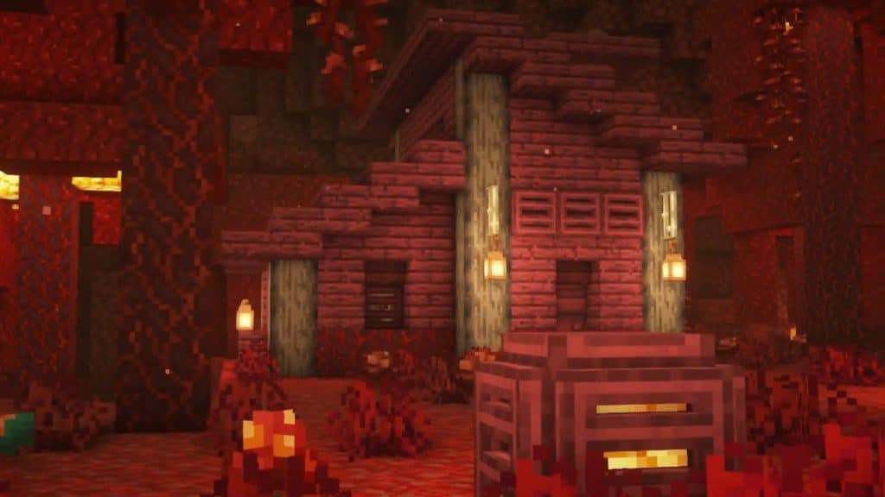
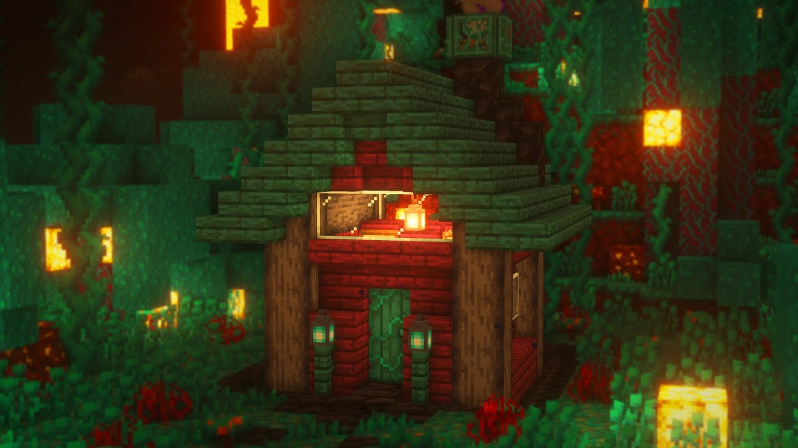
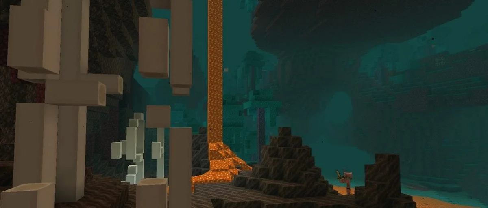
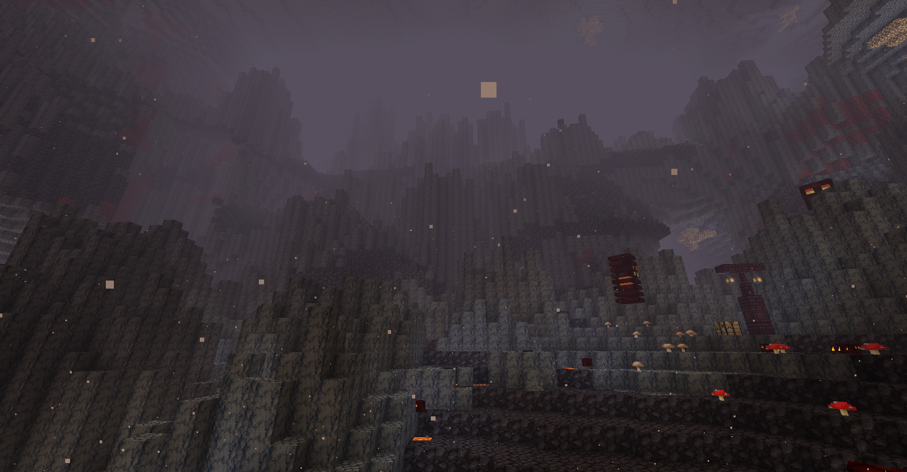
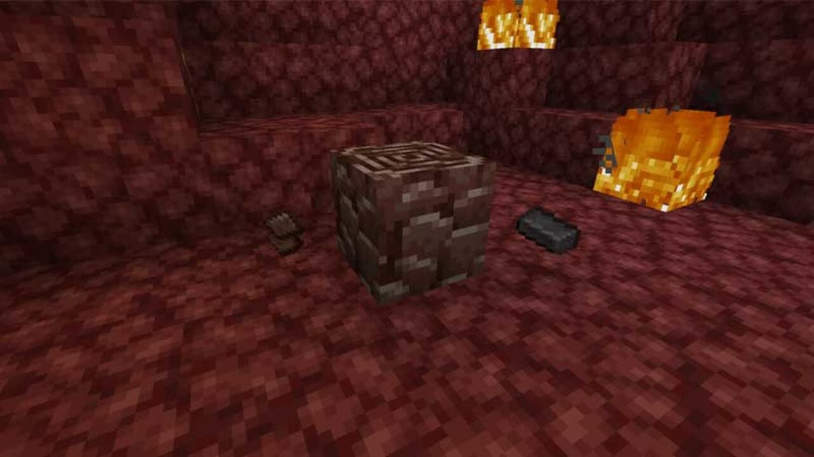
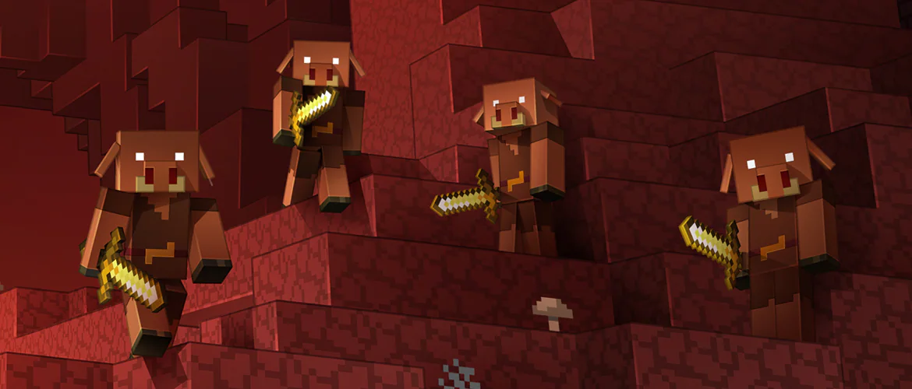
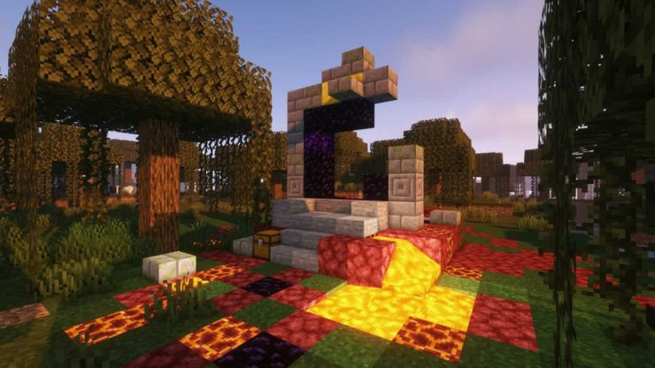
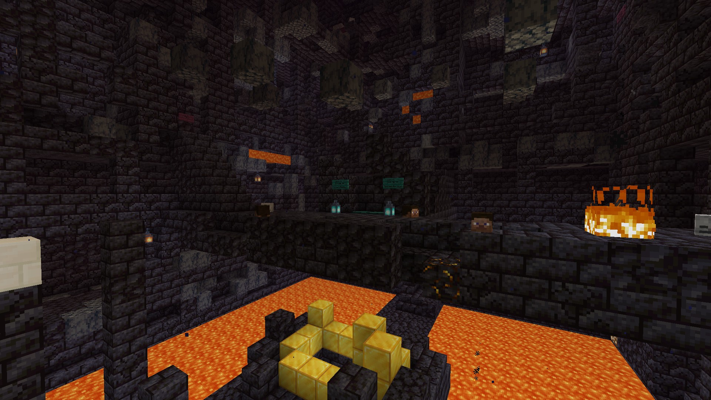

The 1.16 minecraft version entered the game on June 23, 2020
The update introduces a lot of content to the game, including:
Crimson biome
Enter the haunting and otherworldly Crimson Biome, a twisted and macabre landscape found within the Nether. Dark crimson trees with gnarled branches dominate the scenery, accompanied by vibrant fungi and eerie vegetation. Beware of the hostile hoglins that roam the area, ready to attack unsuspecting adventurers. Explore this foreboding realm to discover its unique resources and unearth its secrets, but be prepared for the dangers that lurk at every turn.

Warped biome
Step into the surreal and enchanting Warped Biome, a mystical landscape within the Nether. Here, towering fungi in shades of blue create a dreamlike atmosphere, surrounded by twisted vines and peculiar flora. The ambient lighting casts a calming glow, contrasting the darkened Nether backdrop. Encounter the enigmatic striders gracefully wandering through the biome, adding an element of tranquility to this otherworldly realm. Immerse yourself in the serene ambiance of the Warped Biome as you uncover its hidden treasures and embrace the ethereal beauty that it holds.

Soulsand Valley biome
Enter the desolate and haunting Soulsand Valley, a foreboding biome within the Nether. Here, the ground is covered in soul sand and soul soil, creating a grim and eerie atmosphere. Wisps of soul particles float through the air, adding to the otherworldly ambiance. Beware of the menacing skeletons and ghasts that lurk in the shadows, ready to attack. Explore this treacherous landscape to uncover hidden treasures and navigate the challenging terrain. The Soulsand Valley is a place of danger and mystery, where brave adventurers can test their mettle and discover the dark secrets that lie within.

Basalt Deltas biome
Immerse yourself in the dramatic and rugged beauty of the Basalt Deltas, a unique biome within the Nether. This striking landscape is characterized by its dark and imposing basalt pillars, formed from ancient lava flows. Traverse the treacherous terrain as you navigate through narrow chasms and towering cliffs. The area is littered with pockets of magma blocks and magma cubes, adding an element of danger to your exploration. The Basalt Deltas offer a visually stunning backdrop, with its blackened rocks contrasting against the fiery hues of the Nether. Prepare for a challenging adventure as you uncover hidden resources and marvel at the raw power of the Nether's volcanic landscape in the Basalt Deltas.

Ancient Debris
Unearth the coveted Ancient Debris, a rare and valuable resource found deep within the Nether. This dark and durable material can be smelted into Netherite Scrap, a key ingredient in crafting Netherite, one of the most powerful and sought-after materials in Minecraft. Netherite can be used to upgrade your armor, tools, and weapons, providing exceptional durability and strength. With Netherite equipment, you'll gain enhanced abilities and protection, making you a formidable force against the dangers of the Nether and the Overworld. Seek out Ancient Debris to unlock the true potential of your gear and elevate your Minecraft experience to new heights.

Piglins mob
Encounter the Piglins, a tribal and pig-like humanoid species inhabiting the Nether. These fascinating creatures are known for their distinct appearance, adorned in golden armor and wielding crossbows or golden swords. They can be found in various Nether locations, such as bastions or fortresses. Piglins are fascinated by gold and will eagerly trade with players who offer them gold ingots or gold items. In return, they may provide valuable items such as potions, enchanted books, or even rare Netherite-related items. However, beware of their unpredictable nature—Piglins can quickly turn hostile if provoked, so it's essential to approach them with caution. Additionally, Piglins have a unique behavior when it comes to the Nether's ecosystem. They are hostile towards Wither Skeletons, Zombie Pigmen, and Hoglins, engaging in combats with them. Piglins also have a fondness for hoglin meat, which they will eagerly consume when available. Understanding the ways of the Piglins can be beneficial during your Nether adventures. By establishing trading relationships, avoiding hostility, and utilizing their knowledge of the Nether, you can gain valuable resources and insights to aid you on your journey.

Hoglins mob
Beware of the fearsome Hoglins, aggressive and territorial creatures found in the Nether. These formidable beasts resemble large, boar-like creatures with sharp tusks and a menacing disposition. Hoglins reside primarily in the Crimson Forest biome. Hoglins are hostile towards players unless they are wearing at least one piece of gold armor. If approached without proper protection, they will relentlessly charge and attack. Defeating a Hoglin can yield valuable drops, including raw porkchops and leather. While dangerous, Hoglins also serve as a renewable source of food and materials. By breeding Hoglins using crimson fungi, players can secure a steady supply of meat. Additionally, Hoglins drop leather, which is a crucial resource for crafting various items. Due to their aggressive nature, caution must be exercised when encountering Hoglins. Engaging them in combat requires strategic planning and adequate protection. With proper preparation, you can effectively utilize Hoglins as a valuable resource in your Nether adventures.

Ruined Portals
Discover the intriguing Ruined Portals scattered throughout Minecraft. These crumbling structures offer a glimpse into ancient civilizations and can be activated as shortcuts to the Nether. Beware of the dangers that lurk around them, but the potential rewards make them worth exploring. Venture into the Nether through these portals to uncover valuable loot and resources, but remember to come prepared for the challenges that await.

Bastions
Explore the formidable Bastions in the Nether, home to the Piglins. These fortress-like structures hold valuable loot and are guarded by Piglin Brutes. Exercise caution and strategic planning to navigate the different sections and secure the treasures within. Prepare for thrilling battles and rewarding adventures as you delve into the heart of the Bastions.
